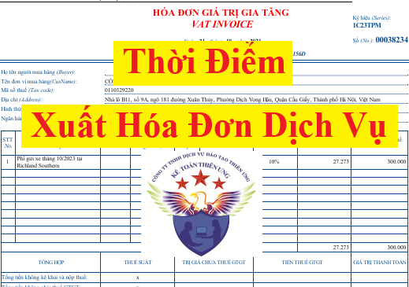

Quy định về thời điểm xuất hóa đơn dịch vụ theo Nghị định 70/2025/NĐ-CP sửa đổi Nghị định 123/2020/NĐ-CP và Thông tư 78/2021/TT-BTC
1. Bắt đầu kể từ ngày 01/06/2025 trở đi, kể từ khi nghị định 70/2025/NĐ-CP có hiệu lực thì thời điểm lập hóa đơn dịch vụ được quy định tại Khoản 6 Điều 1 Nghị định 70/2025/NĐ-CP như sau:
Thời điểm lập hóa đơn đối với cung cấp dịch vụ là thời điểm hoàn thành việc cung cấp dịch vụ (bao gồm cả cung cấp dịch vụ cho tổ chức, cá nhân nước ngoài) không phân biệt đã thu được tiền hay chưa thu được tiền.
Trường hợp người cung cấp dịch vụ có thu tiền trước hoặc trong khi cung cấp dịch vụ thì thời điểm lập hóa đơn là thời điểm thu tiền (không bao gồm trường hợp thu tiền đặt cọc hoặc tạm ứng để đảm bảo thực hiện hợp đồng cung cấp các dịch vụ: Kế toán, kiểm toán, tư vấn tài chính, thuế; thẩm định giá; khảo sát, thiết kế kỹ thuật; tư vấn giám sát; lập dự án đầu tư xây dựng)
Vậy là: Khi cung cấp dịch vụ thì các bạn cần quan tâm như sau:
+ Trường hợp 1: Có thu được tiền trước khi cung cấp dịch vụ => Phải lập hóa đơn ngay tại thời điểm thu được tiền
+ Trường hợp 1: Có thu được tiền trước khi cung cấp dịch vụ => Phải lập hóa đơn ngay tại thời điểm thu được tiền
Ví dụ 1:
Ngày 25/6/2025, Công Ty Diệu Tâm ký hợp đồng dịch vụ cho Công ty Minh Long thuê kho bãi, thỏa thuận như sau:
Ngày 25/6/2025, Công Ty Diệu Tâm ký hợp đồng dịch vụ cho Công ty Minh Long thuê kho bãi, thỏa thuận như sau:
+ Thời hạn thuê: 1 tháng từ ngày 01/7/2025 đến hết ngày 31/7/2025
+ Giá thuê: 11.000.000đ (đã bao gồm VAT)
+ Thời điểm thanh toán: Ngay khi ký hợp đồng vào ngày 25/6/2025
=> Ngày 25/6/2025, sau khi ký hợp đồng thì công ty Minh Long đã thanh toán 11.000.000đ tiền thuê kho bãi cho công ty Diệu Tâm
+ Giá thuê: 11.000.000đ (đã bao gồm VAT)
+ Thời điểm thanh toán: Ngay khi ký hợp đồng vào ngày 25/6/2025
=> Ngày 25/6/2025, sau khi ký hợp đồng thì công ty Minh Long đã thanh toán 11.000.000đ tiền thuê kho bãi cho công ty Diệu Tâm
Chúng ta xác định như sau:
|
Trước ngày 01/7/2025
|
Từ ngày 01/07/2025 đến hết ngày 31/07/2025
|
|
Đây là thời điểm trước khi cung cấp dịch vụ
|
Đây là thời điểm cung cấp dịch vụ
|
|
Ngày 25/6/2025, Công ty Diệu Tâm nhận được tiền => Tức là đang thu được tiền trước khi cung ứng dịch vụ
=> Công ty Diệu Tâm phải lập hóa đơn ngay tại thời điểm thu được tiền (Phải lập hóa đơn dịch vụ vào ngày 25/6/2025) |
|
+ Trường hợp 2: Có thu được tiền trong khi cung cấp dịch vụ => Phải lập hóa đơn ngay tại thời điểm thu được tiền
Ví dụ 2:
Ngày 10/7/2025, Công ty Kế Toán Diệu Tâm ký hợp đồng làm dịch vụ kế toán thuế quý 2 năm 2025 cho công ty Bảo An. Trên hợp đồng thỏa thuận:
Ngày 10/7/2025, Công ty Kế Toán Diệu Tâm ký hợp đồng làm dịch vụ kế toán thuế quý 2 năm 2025 cho công ty Bảo An. Trên hợp đồng thỏa thuận:
+ Thời điểm bắt đầu thực hiện dịch vụ là từ ngày 11/7/2025 đến hết ngày 20/07/2025 là phải hoàn thành dịch vụ -> bàn giao báo cáo tờ khai thuế
+ Giá dịch vụ: 5.000.000đ (đã bao gồm VAT)
+ Thời điểm thanh toán: Trong vòng 5 ngày kể từ ngày ký hợp đồng dịch vụ này
+ Giá dịch vụ: 5.000.000đ (đã bao gồm VAT)
+ Thời điểm thanh toán: Trong vòng 5 ngày kể từ ngày ký hợp đồng dịch vụ này
=> Ngày 15/7/2025, Công ty Bảo An đã thanh toán 5.000.000đ tiền dịch vụ kế toán thuế quý 2 năm 2025 cho công ty Diệu Tâm
Chúng ta xác định như sau:
Từ ngày 11/07/2025 đến hết ngày 20/07/2025: là thời điểm cung cấp dịch vụ (trong khi cung cấp dịch vụ)
Mà công ty Kế Toán Diệu Tâm đã nhận được tiền dịch vụ vào ngày 15/07/2025 => Tức là đã có thu được tiền trong khi cung cấp dịch vụ (Ngày 15/07/2025 thuộc vào trong khoảng thời gian cung cấp dịch vụ từ ngày 11/07/2025 đến hết ngày 20/07/2025)
Từ ngày 11/07/2025 đến hết ngày 20/07/2025: là thời điểm cung cấp dịch vụ (trong khi cung cấp dịch vụ)
Mà công ty Kế Toán Diệu Tâm đã nhận được tiền dịch vụ vào ngày 15/07/2025 => Tức là đã có thu được tiền trong khi cung cấp dịch vụ (Ngày 15/07/2025 thuộc vào trong khoảng thời gian cung cấp dịch vụ từ ngày 11/07/2025 đến hết ngày 20/07/2025)
Nên khi nhận được tiền vào ngày 15/07/2025, Công ty Kế Toán Diệu Tâm phải xuất hóa đơn tại thời điểm thu được tiền này (Phải lập hóa đơn dịch vụ vào ngày 15/04/2025)
+ Trường hợp 3: Hoàn thành việc cung cấp dịch vụ => Phải lập hóa đơn ngay tại thời điểm hoàn thành việc cung cấp dịch vụ mà không cần phân biệt đã thu được tiền hay chưa thu được tiền.
Ví dụ 3:
Ngày 20/6/2025, Công ty Kế Toán Diệu Tâm ký hợp đồng làm dịch vụ rà soát sổ sách kế toán cho công ty Đại Phát. Trên hợp đồng thỏa thuận:
Ngày 20/6/2025, Công ty Kế Toán Diệu Tâm ký hợp đồng làm dịch vụ rà soát sổ sách kế toán cho công ty Đại Phát. Trên hợp đồng thỏa thuận:
+ Thời điểm thực hiện dịch vụ: 1 tháng, bắt đầu từ ngày 21/06/2025 đến hết ngày 21/07/2025
+ Giá dịch vụ: 10.000.000đ (đã bao gồm VAT)
+ Thời điểm thanh toán: Trong vòng 10 ngày kể từ ngày hoàn thành dịch vụ
+ Giá dịch vụ: 10.000.000đ (đã bao gồm VAT)
+ Thời điểm thanh toán: Trong vòng 10 ngày kể từ ngày hoàn thành dịch vụ
=> Ngày 21/07/2025, Công ty Kế Toán Diệu Tâm đã hoàn thành dịch vụ rà soát sổ sách kế toán cho công ty Đại Phát => Đã nghiệm thu dịch vụ, bàn giao sổ sách kế toán cho công ty Đại Phát, nhưng chưa thu được tiền
Chúng ta xác định như sau:
Thời điểm hoàn thành việc cung cấp dịch vụ là ngày 21/07/2025
=> Khi đã hoàn thành dịch vụ vào ngày 21/07/2025 rồi thì dù Công ty Kế Toán Diệu Tâm có thu được tiền dịch vụ hay không đều vẫn phải xuất hóa đơn tại thời điểm hoàn thành việc cung cấp dịch vụ này (Phải lập hóa đơn dịch vào ngày 21/07/2025)
Chúng ta xác định như sau:
Thời điểm hoàn thành việc cung cấp dịch vụ là ngày 21/07/2025
=> Khi đã hoàn thành dịch vụ vào ngày 21/07/2025 rồi thì dù Công ty Kế Toán Diệu Tâm có thu được tiền dịch vụ hay không đều vẫn phải xuất hóa đơn tại thời điểm hoàn thành việc cung cấp dịch vụ này (Phải lập hóa đơn dịch vào ngày 21/07/2025)
Lưu ý 1: Khi thu tiền đặt cọc hoặc tạm ứng để đảm bảo thực hiện hợp đồng cung cấp các dịch vụ:
+ Đối với các dịch vụ: kế toán, kiểm toán, tư vấn tài chính, thuế; thẩm định giá; khảo sát, thiết kế kỹ thuật; tư vấn giám sát; lập dự án đầu tư xây dựng => Thì khi thu tiền đặt cọc hoặc tạm ứng để đảm bảo thực hiện hợp đồng sẽ chưa phải lập hóa đơn
+ Còn đối với các dịch vụ khác (không thuộc các dịch vụ nêu trên) thì khi thu tiền đặt cọc hoặc tạm ứng để đảm bảo thực hiện hợp đồng sẽ phải lập hóa đơn
Lưu ý 2: Trường hợp giao hàng nhiều lần hoặc bàn giao từng hạng mục, công đoạn dịch vụ thì mỗi lần giao hàng hoặc bàn giao đều phải lập hóa đơn cho khối lượng, giá trị hàng hóa, dịch vụ được giao tương ứng.+ Còn đối với các dịch vụ khác (không thuộc các dịch vụ nêu trên) thì khi thu tiền đặt cọc hoặc tạm ứng để đảm bảo thực hiện hợp đồng sẽ phải lập hóa đơn
Thời điểm lập hóa đơn đối với một số trường hợp cụ thể như sau:
a) Đối với các trường hợp bán hàng hóa, cung cấp dịch vụ với số lượng lớn, phát sinh thường xuyên, cần có thời gian đối soát số liệu giữa doanh nghiệp bán hàng hóa, cung cấp dịch vụ và khách hàng, đối tác gồm: Trường hợp cung cấp dịch vụ hỗ trợ trực tiếp cho vận tải hàng không, cung ứng nhiên liệu hàng không cho các hãng hàng không, hoạt động cung cấp điện (trừ đối tượng quy định tại điểm h khoản này), cung cấp dịch vụ hỗ trợ vận tải đường sắt, nước, dịch vụ truyền hình, dịch vụ quảng cáo truyền hình, dịch vụ thương mại điện tử, dịch vụ bưu chính và chuyển phát (bao gồm cả dịch vụ đại lý, dịch vụ thu hộ, chi hộ), dịch vụ viễn thông (bao gồm cả dịch vụ viễn thông giá trị gia tăng), dịch vụ logistic, dịch vụ công nghệ thông tin (trừ trường hợp quy định tại điểm b khoản này) được bán theo kỳ nhất định, dịch vụ ngân hàng (trừ hoạt động cho vay), chuyển tiền quốc tế, dịch vụ chứng khoán, xổ số điện toán, thu phí sử dụng đường bộ giữa nhà đầu tư và nhà cung cấp dịch vụ thu phí và các trường hợp khác theo hướng dẫn của Bộ trưởng Bộ Tài chính, thời điểm lập hóa đơn là thời điểm hoàn thành việc đối soát dữ liệu giữa các bên nhưng chậm nhất không quá ngày 07 của tháng sau tháng phát sinh việc cung cấp dịch vụ hoặc không quá 07 ngày kể từ ngày kết thúc kỳ quy ước. Kỳ quy ước để làm căn cứ tính lượng hàng hóa, dịch vụ cung cấp căn cứ thỏa thuận giữa đơn vị bán hàng hóa, cung cấp dịch vụ với người mua.
b) Đối với dịch vụ viễn thông (bao gồm cả dịch vụ viễn thông giá trị gia tăng), dịch vụ công nghệ thông tin (bao gồm dịch vụ trung gian thanh toán sử dụng trên nền tảng viễn thông, công nghệ thông tin) phải thực hiện đối soát dữ liệu kết nối giữa các cơ sở kinh doanh dịch vụ, thời điểm lập hóa đơn là thời điểm hoàn thành việc đối soát dữ liệu về cước dịch vụ theo hợp đồng kinh tế giữa các cơ sở kinh doanh dịch vụ nhưng chậm nhất không quá 2 tháng kể từ tháng phát sinh cước dịch vụ kết nối.
Trường hợp cung cấp dịch vụ viễn thông (bao gồm cả dịch vụ viễn thông giá trị gia tăng) thông qua bán thẻ trả trước, thu cước phí hòa mạng khi khách hàng đăng ký sử dụng dịch vụ mà khách hàng không yêu cầu xuất hóa đơn GTGT hoặc không cung cấp tên, địa chỉ, mã số thuế thì cuối mỗi ngày hoặc định kỳ trong tháng, cơ sở kinh doanh dịch vụ lập chung một hóa đơn GTGT ghi nhận tổng doanh thu phát sinh theo từng dịch vụ người mua không lấy hóa đơn hoặc không cung cấp tên, địa chỉ, mã số thuế.
c) Đối với hoạt động xây dựng, lắp đặt, thời điểm lập hóa đơn là thời điểm nghiệm thu, bàn giao công trình, hạng mục công trình, khối lượng xây dựng, lắp đặt hoàn thành, không phân biệt đã thu được tiền hay chưa thu được tiền.
d) Đối với tổ chức kinh doanh bất động sản, xây dựng cơ sở hạ tầng, xây dựng nhà để bán, chuyển nhượng:
d.1) Trường hợp chưa chuyển giao quyền sở hữu, quyền sử dụng: Có thực hiện thu tiền theo tiến độ thực hiện dự án hoặc tiến độ thu tiền ghi trong hợp đồng thì thời điểm lập hóa đơn là ngày thu tiền hoặc theo thỏa thuận thanh toán trong hợp đồng.
d.2) Trường hợp đã chuyển giao quyền sở hữu, quyền sử dụng: Thời điểm lập hóa đơn thực hiện theo quy định tại khoản 1 Điều này.
đ) Thời điểm lập hóa đơn đối với các trường hợp tổ chức kinh doanh mua dịch vụ vận tải hàng không xuất qua website và hệ thống thương mại điện tử được lập theo thông lệ quốc tế chậm nhất không quá 05 ngày kế tiếp kể từ ngày chứng từ dich vụ vận tải hàng không xuất ra trên hệ thống website và hệ thống thương mại điện tử.
e) Đối với hoạt động tìm kiếm thăm dò, khai thác và chế biến dầu thô: Thời điểm lập hóa đơn bán dầu thô, condensate, các sản phẩm được chế biến từ dầu thô (bao gồm cả hoạt động bao tiêu sản phẩm theo cam kết của Chính phủ) là thời điểm bên mua và bên bán xác định được giá bán chính thức, không phân biệt đã thu được tiền hay chưa thu được tiền.
Đối với hoạt động bán khí thiên nhiên, khí đồng hành, khí than được chuyển bằng đường ống dẫn khí đến người mua, thời điểm lập hóa đơn là thời điểm bên mua, bên bán xác định khối lượng khí giao của tháng nhưng chậm nhất là ngày cuối cùng của thời hạn kê khai, nộp thuế đối với tháng phát sinh nghĩa vụ thuế theo quy định pháp luật về thuế.
Trường hợp thỏa thuận bảo lãnh và cam kết của Chính phủ có quy định khác về thời điểm lập hóa đơn thì thực hiện theo quy định tại thỏa thuận bảo lãnh và cam kết của Chính phủ.
h) Đối với hoạt động bán điện của các công ty phát điện trên thị trường điện thì thời điểm lập hóa đơn điện tử được xác định căn cứ thời điểm về đối soát số liệu thanh toán giữa đơn vị vận hành hệ thống điện và thị trường điện, đơn vị phát điện và đơn vị mua điện theo quy định của Bộ Công Thương hoặc hợp đồng mua bán điện đã được Bộ Công Thương hướng dẫn, phê duyệt nhưng chậm nhất là ngày cuối cùng của thời hạn kê khai, nộp thuế đối với tháng phát sinh nghĩa vụ thuế theo quy định pháp luật về thuế. Riêng hoạt động bán điện của các công ty phát điện có cam kết bảo lãnh của Chính phủ về thời điểm thanh toán thì thời điểm lập hóa đơn điện tử căn cứ theo bảo lãnh của Chính phủ, hướng dẫn và phê duyệt của Bộ Công Thương và các hợp đồng mua bán điện đã được ký kết giữa bên mua điện và bên bán điện.
i) Thời điểm lập hóa đơn điện tử đối với trường hợp bán xăng dầu tại các cửa hàng bán lẻ cho khách hàng là thời điểm kết thúc việc bán xăng dầu theo từng lần bán. Người bán phải đảm bảo lưu trữ đầy đủ hóa đơn điện tử đối với trường hợp bán xăng dầu cho khách hàng là cá nhân không kinh doanh, cá nhân kinh doanh và đảm bảo có thể tra cứu khi cơ quan có thẩm quyền yêu cầu.
k) Đối với trường hợp cung cấp dịch vụ vận tải hàng không, dịch vụ bảo hiểm qua đại lý, thời điểm lập hóa đơn là thời điểm hoàn thành việc đối soát dữ liệu giữa các bên nhưng chậm nhất không quá ngày 10 của tháng sau tháng phát sinh.
l) Thời điểm lập hóa đơn đối với hoạt động cho vay được xác định theo kỳ hạn thu lãi tại hợp đồng tín dụng giữa tổ chức tín dụng và khách hàng đi vay, trừ trường hợp đến kỳ hạn thu lãi không thu được và tổ chức tín dụng theo dõi ngoại bảng theo quy định pháp luật về tín dụng thì thời điểm lập hóa đơn là thời điểm thu được tiền lãi vay của khách hàng. Trường hợp trả lãi trước hạn theo hợp đồng tín dụng thì thời điểm lập hóa đơn là thời điểm thu lãi trước hạn.
Đối với hoạt động đại lý đổi ngoại tệ, hoạt động cung ứng dịch vụ nhận và chi, trả ngoại tệ của tổ chức kinh tế của tổ chức tín dụng, thời điểm lập hóa đơn là thời điểm đổi ngoại tệ, thời điểm hoàn thành dịch vụ nhận và chi trả ngoại tệ.
m) Đối với kinh doanh vận tải hành khách bằng xe taxi có sử dụng phần mềm tính tiền theo quy định của pháp luật: tại thời điểm kết thúc chuyến đi, doanh nghiệp, hợp tác xã kinh doanh vận tải hành khách bằng xe taxi có sử dụng phần mềm tính tiền thực hiện lập hóa đơn điện tử cho khách hàng đồng thời chuyển dữ liệu hóa đơn đến cơ quan thuế theo quy định.
n) Đối với cơ sở khám bệnh, chữa bệnh có sử dụng phần mềm quản lý khám chữa bệnh và quản lý viện phí, từng giao dịch khám, chữa bệnh và thực hiện các dịch vụ chụp, chiếu, xét nghiệm có in phiếu thu tiền (thu viện phí hoặc tiền khám, xét nghiệm) và có lưu trên hệ thống công nghệ thông tin, nếu khách hàng (người đến khám, chữa bệnh) không có nhu cầu lấy hóa đơn thì cuối ngày cơ sở khám bệnh, chữa bệnh căn cứ thông tin khám, chữa bệnh và thông tin từ phiếu thu tiền để tổng hợp lập hóa đơn điện tử cho các dịch vụ y tế thực hiện trong ngày, trường hợp khách hàng yêu cầu lập hóa đơn điện tử thì cơ sở khám bệnh, chữa bệnh lập hóa đơn điện tử giao cho khách hàng.
Cơ sở khám bệnh, chữa bệnh lập hóa đơn cho cơ quan bảo hiểm xã hội tại thời điểm được cơ quan bảo hiểm xã hội thanh, quyết toán chi phí khám chữa bệnh cho người có thẻ bảo hiểm y tế.
o) Đối với hoạt động thu phí dịch vụ sử dụng đường bộ theo hình thức điện tử không dừng ngày lập hóa đơn điện tử là ngày xe lưu thông qua trạm thu phí. Trường hợp khách hàng sử dụng dịch vụ thu phí đường bộ theo hình thức điện tử không dừng có một hoặc nhiều phương tiện cùng sử dụng dịch vụ nhiều lần trong tháng, đơn vị cung cấp dịch vụ có thể lập hóa đơn điện tử theo định kỳ, ngày lập hóa đơn điện tử chậm nhất là ngày cuối cùng của tháng phát sinh dịch vụ thu phí. Nội dung hóa đơn liệt kê chi tiết từng lượt xe lưu thông qua các trạm thu phí (bao gồm: thời gian xe qua trạm, giá phí sử dụng đường bộ của từng lượt xe).
p) Thời điểm lập hóa đơn của hoạt động kinh doanh bảo hiểm là thời điểm ghi nhận doanh thu bảo hiểm theo quy định của pháp luật về kinh doanh bảo hiểm.
q) Đối với hoạt động kinh doanh vé xổ số truyền thống, xổ số biết kết quả ngay (vé xổ số) theo hình thức bán vé số in sẵn đủ mệnh giá cho khách hàng thì sau khi thu hồi vé xổ số không tiêu thụ hết và chậm nhất là trước khi mở thưởng của kỳ tiếp theo, doanh nghiệp kinh doanh xổ số lập 01 hóa đơn giá trị gia tăng điện tử có mã của cơ quan thuế cho từng đại lý là tổ chức, cá nhân cho vé xổ số được bán trong kỳ gửi cơ quan thuế cấp mã cho hóa đơn.
r) Đối với hoạt động kinh doanh casino và trò chơi điện tử có thưởng, thời điểm lập hóa đơn điện tử chậm nhất là 01 ngày kể từ thời điểm kết thúc ngày xác định doanh thu, đồng thời doanh nghiệp kinh doanh casino và trò chơi điện tử có thưởng chuyển dữ liệu ghi nhận số tiền thu được (do đổi đồng tiền quy ước cho người chơi tại quầy, tại bàn chơi và số tiền thu tại máy trò chơi điện tử có thưởng) trừ đi số tiền đổi trả cho người chơi (do người chơi trúng thưởng hoặc người chơi không sử dụng hết) theo Mẫu 01/TH-DT Phụ lục IA ban hành kèm theo Nghị định này đến cơ quan thuế cùng thời điểm chuyển dữ liệu hóa đơn điện tử. Ngày xác định doanh thu là khoảng thời gian từ 0 giờ 00 phút đến 23 giờ 59 phút cùng ngày.
============================
Công ty đào tạo Kế Toán Diệu Tâm mời các bạn tham khảo thêm bài viết:
Thời điểm ghi nhận doanh thu dịch vụ
============================
Thời điểm lập hóa đơn đối với hoạt động cung ứng dịch vụ hiện nay đang được quy định tại điều 9 của Nghị định 123/2020/NĐ-CP quy định về hoá đơn, chứng từ như sau:
1. Thời điểm lập hóa đơn đối với cung cấp dịch vụ là thời điểm hoàn thành việc cung cấp dịch vụ không phân biệt đã thu được tiền hay chưa thu được tiền. Trường hợp người cung cấp dịch vụ có thu tiền trước hoặc trong khi cung cấp dịch vụ thì thời điểm lập hóa đơn là thời điểm thu tiền (không bao gồm trường hợp thu tiền đặt cọc hoặc tạm ứng để đảm bảo thực hiện hợp đồng cung cấp các dịch vụ: kế toán, kiểm toán, tư vấn tài chính, thuế; thẩm định giá; khảo sát, thiết kế kỹ thuật; tư vấn giám sát; lập dự án đầu tư xây dựng).
2. Trường hợp giao hàng nhiều lần hoặc bàn giao từng hạng mục, công đoạn dịch vụ thì mỗi lần giao hàng hoặc bàn giao đều phải lập hóa đơn cho khối lượng, giá trị hàng hóa, dịch vụ được giao tương ứng.
3. Thời điểm lập hóa đơn đối với một số trường hợp cụ thể như sau:
+ Đối với các trường hợp cung cấp dịch vụ với số lượng lớn, phát sinh thường xuyên, cần có thời gian đối soát số liệu giữa doanh nghiệp cung cấp dịch vụ và khách hàng, đối tác như trường hợp cung cấp dịch vụ hỗ trợ trực tiếp cho vận tải hàng không, cung ứng nhiên liệu hàng không cho các hãng hàng không, hoạt động cung cấp điện (trừ đối tượng quy định tại điểm h khoản này), nước, dịch vụ truyền hình, dịch vụ bưu chính chuyển phát (bao gồm cả dịch vụ đại lý, dịch vụ thu hộ, chi hộ), dịch vụ viễn thông (bao gồm cả dịch vụ viễn thông giá trị gia tăng), dịch vụ logistic, dịch vụ công nghệ thông tin (trừ trường hợp quy định tại điểm b khoản này) được bán theo kỳ nhất định, thời điểm lập hóa đơn là thời điểm hoàn thành việc đối soát dữ liệu giữa các bên nhưng chậm nhất không quá ngày 07 của tháng sau tháng phát sinh việc cung cấp dịch vụ hoặc không quá 07 ngày kể từ ngày kết thúc kỳ quy ước. Kỳ quy ước để làm căn cứ tính lượng hàng hóa, dịch vụ cung cấp căn cứ thỏa thuận giữa đơn vị bán hàng hóa, cung cấp dịch vụ với người mua.
+ Đối với dịch vụ viễn thông (bao gồm cả dịch vụ viễn thông giá trị gia tăng), dịch vụ công nghệ thông tin (bao gồm dịch vụ trung gian thanh toán sử dụng trên nền tảng viễn thông, công nghệ thông tin) phải thực hiện đối soát dữ liệu kết nối giữa các cơ sở kinh doanh dịch vụ, thời điểm lập hóa đơn là thời điểm hoàn thành việc đối soát dữ liệu về cước dịch vụ theo hợp đồng kinh tế giữa các cơ sở kinh doanh dịch vụ nhưng chậm nhất không quá 2 tháng kể từ tháng phát sinh cước dịch vụ kết nối.
Trường hợp cung cấp dịch vụ viễn thông (bao gồm cả dịch vụ viễn thông giá trị gia tăng) thông qua bán thẻ trả trước, thu cước phí hòa mạng khi khách hàng đăng ký sử dụng dịch vụ mà khách hàng không yêu cầu xuất hóa đơn GTGT hoặc không cung cấp tên, địa chỉ, mã số thuế thì cuối mỗi ngày hoặc định kỳ trong tháng, cơ sở kinh doanh dịch vụ lập chung một hóa đơn GTGT ghi nhận tổng doanh thu phát sinh theo từng dịch vụ người mua không lấy hóa đơn hoặc không cung cấp tên, địa chỉ, mã số thuế.
+ Đối với hoạt động xây dựng, lắp đặt, thời điểm lập hóa đơn là thời điểm nghiệm thu, bàn giao công trình, hạng mục công trình, khối lượng xây dựng, lắp đặt hoàn thành, không phân biệt đã thu được tiền hay chưa thu được tiền.
+ Thời điểm lập hóa đơn đối với các trường hợp tổ chức kinh doanh mua dịch vụ vận tải hàng không xuất qua website và hệ thống thương mại điện tử được lập theo thông lệ quốc tế chậm nhất không quá 05 ngày kế tiếp kể từ ngày chứng từ dich vụ vận tải hàng không xuất ra trên hệ thống website và hệ thống thương mại điện tử.
+ Đối với cơ sở kinh doanh thương mại bán lẻ, kinh doanh dịch vụ ăn uống theo mô hình hệ thống cửa hàng bán trực tiếp đến người tiêu dùng nhưng việc hạch toán toàn bộ hoạt động kinh doanh được thực hiện tại trụ sở chính (trụ sở chính trực tiếp ký hợp đồng mua, bán hàng hóa, dịch vụ; hóa đơn bán hàng hóa, dịch vụ từng cửa hàng xuất cho khách hàng xuất qua hệ thống máy tính tiền của từng cửa hàng đứng tên trụ sở chính), hệ thống máy tính tiền kết nối với máy tính chưa đáp ứng điều kiện kết nối chuyển dữ liệu với cơ quan thuế, từng giao dịch bán hàng hóa, cung cấp đồ ăn uống có in Phiếu tính tiền cho khách hàng, dữ liệu Phiếu tính tiền có lưu trên hệ thống và khách hàng không có nhu cầu nhận hóa đơn điện tử thì cuối ngày cơ sở kinh doanh căn cứ thông tin từ Phiếu tính tiền để tổng hợp lập hóa đơn điện tử cho các giao dịch bán hàng hóa, cung cấp đồ ăn uống trong ngày, trường hợp khách hàng yêu cầu lập hóa đơn điện tử thì cơ sở kinh doanh lập hóa đơn điện tử giao cho khách hàng.
+ Đối với hoạt động bán điện của các công ty phát điện trên thị trường điện thì thời điểm lập hóa đơn điện tử được xác định căn cứ thời điểm về đối soát số liệu thanh toán giữa đơn vị vận hành hệ thống điện và thị trường điện, đơn vị phát điện và đơn vị mua điện theo quy định của Bộ Công Thương hoặc hợp đồng mua bán điện đã được Bộ Công Thương hướng dẫn, phê duyệt nhưng chậm nhất là ngày cuối cùng của thời hạn kê khai, nộp thuế đối với tháng phát sinh nghĩa vụ thuế theo quy định pháp luật về thuế. Riêng hoạt động bán điện của các công ty phát điện có cam kết bảo lãnh của Chính phủ về thời điểm thanh toán thì thời điểm lập hóa đơn điện tử căn cứ theo bảo lãnh của Chính phủ, hướng dẫn và phê duyệt của Bộ Công Thương và các hợp đồng mua bán điện đã được ký kết giữa bên mua điện và bên bán điện.
+ Đối với trường hợp cung cấp dịch vụ vận tải hàng không, dịch vụ bảo hiểm qua đại lý, thời điểm lập hóa đơn là thời điểm hoàn thành việc đối soát dữ liệu giữa các bên nhưng chậm nhất không quá ngày 10 của tháng sau tháng phát sinh.
+ Trường hợp cung cấp dịch vụ ngân hàng, chứng khoán, bảo hiểm, dịch vụ chuyển tiền qua ví điện tử, dịch vụ ngừng và cấp điện trở lại của đơn vị phân phối điện cho người mua là cá nhân không kinh doanh (hoặc cá nhân kinh doanh) nhưng không có nhu cầu lấy hóa đơn thì cuối ngày hoặc cuối tháng đơn vị thực hiện xuất hóa đơn tổng căn cứ thông tin chi tiết từng giao dịch phát sinh trong ngày, trong tháng tại hệ thống quản lý dữ liệu của đơn vị. Đơn vị cung cấp dịch vụ phải chịu trách nhiệm về tính chính xác nội dung thông tin giao dịch và cung cấp bảng tổng hợp chi tiết dịch vụ cung cấp khi cơ quan chức năng yêu cầu. Trường hợp khách hàng yêu cầu lấy hóa đơn theo từng giao dịch thì đơn vị cung cấp dịch vụ phải lập hóa đơn giao cho khách hàng.
+ Đối với kinh doanh vận tải hành khách bằng xe taxi có sử dụng phần mềm tính tiền theo quy định của pháp luật:
+/ Tại thời điểm kết thúc chuyến đi, doanh nghiệp, hợp tác xã kinh doanh vận tải hành khách bằng xe taxi có sử dụng phần mềm tính tiền thực hiện gửi các thông tin của chuyến đi cho khách hàng và gửi về cơ quan thuế theo định dạng dữ liệu của cơ quan thuế. Các thông tin gồm: tên đơn vị kinh doanh vận tải, biển kiểm soát xe, cự ly chuyến đi (tính theo km) và tổng số tiền hành khách phải trả.
+/ Trường hợp khách hàng lấy hóa đơn điện tử thì khách hàng cập nhật hoặc gửi các thông tin đầy đủ (tên, địa chỉ, mã số thuế) vào phần mềm hoặc đơn vị cung cấp dịch vụ. Căn cứ thông tin khách hàng gửi hoặc cập nhật, doanh nghiệp, hợp tác xã kinh doanh vận tải hành khách bằng xe taxi có sử dụng phần mềm tính tiền thực hiện gửi hóa đơn của chuyến đi cho khách hàng, đồng thời chuyển dữ liệu hóa đơn đến cơ quan thuế theo quy định tại Điều 22 Nghị định này.
+ Đối với cơ sở y tế kinh doanh dịch vụ khám chữa bệnh có sử dụng phần mềm quản lý khám chữa bệnh và quản lý viện phí, từng giao dịch khám, chữa bệnh và thực hiện các dịch vụ chụp, chiếu, xét nghiệm có in phiếu thu tiền (thu viện phí hoặc tiền khám, xét nghiệm) và có lưu trên hệ thống công nghệ thông tin, nếu khách hàng (người đến khám, chữa bệnh) không có nhu cầu lấy hóa đơn thì cuối ngày cơ sở y tế căn cứ thông tin khám, chữa bệnh và thông tin từ phiếu thu tiền để tổng hợp lập hóa đơn điện tử cho các dịch vụ y tế thực hiện trong ngày, trường hợp khách hàng yêu cầu lập hóa đơn điện tử thì cơ sở y tế lập hóa đơn điện tử giao cho khách hàng.
Kế Toán Diệu Tâm mời các bạn tham khảo thêm 1 vài các công văn hướng dẫn về thời điểm xuất hóa đơn dịch vụ theo Thông tư 78/2021/TT-BTC và Nghị định 123/2020/NĐ-CP
Thu trước tiền dịch vụ phải lập ngay hóa đơn
Công văn số 43894/CTHN-TTHT ngày 31/7/2024 của Cục Thuế TP. Hà Nội giải đáp về hóa đơn
Theo nguyên tắc quy định tại khoản 1 Điều 4 Nghị định số 123/2020/NĐ-CP, khi bán hàng hóa, cung cấp dịch vụ, Công ty phải lập hóa đơn giao cho người mua và phải ghi đầy đủ nội dung theo quy định tại Điều 10 Nghị định này.

Thời điểm lập hóa đơn đối với cung cấp dịch vụ là thời điểm hoàn thành việc cung cấp dịch vụ không phân biệt đã thu được tiền hay chưa thu được tiền.
Trường hợp Công ty có thu tiền trước hoặc trong khi cung cấp dịch vụ thì thời điểm lập hóa đơn là thời điểm thu tiền theo quy định tại khoản 2 Điều 9 Nghị định số 123/2020/NĐ-CP
Xử lý việc Chấm dứt hợp đồng cho thuê kho trước hạn:
Theo Công văn số 17339/CTHN-TTHT ngày 3/4/2024 của Cục Thuế TP. Hà Nội về việc xử lý hóa đơn có sai sót
Căn cứ Điểm b Khoản 1 Điều 7 Thông tư số 78/2021/TT-BTC ngày 17/9/2021 của Bộ Tài chính hướng dẫn về xử lý hóa đơn điện tử, bảng tổng hợp dữ liệu hóa đơn điện tử đã gửi cơ quan thuế có sai sót trong một số trường hợp:
“b) Trường hợp người bán lập hóa đơn khi thu tiền trước hoặc trong khi cung cấp dịch vụ theo quy định tại Khoản 2 Điều 9 Nghị định số 123/2020/NĐ-CP sau đó có phát sinh việc hủy hoặc chấm dứt việc cung cấp dịch vụ thì người bản thực hiện hủy hóa đơn điện tử đã lập và thông báo với cơ quan thuế về việc hủy hóa đơn theo Mẫu số 04/SS-HĐĐT tại Phụ lục IA ban hành kèm theo Nghị định số 123/202Q/NĐ-CP;”
Căn cứ các quy định trên, trường hợp người bán lập hóa đơn khi thu tiền trước khi cung cấp dịch vụ cho thuê kho, sau đó chấm dứt hợp đồng trước thời hạn, thì người bán xử lý hóa đơn đã lập theo hướng dẫn tại theo hướng dẫn tại Điểm b khoản 2 Điều 19 Nghị định số 123/2020/NĐ-CP ngày 19/10/2020 của Chính phủ và Điểm b Khoản 1 Điều 7 Thông tư số 78/2021/TT-BTC ngày 17/9/2021 của Bộ Tài chính.
Công văn số 1326/TCT-CS ngày 1/4/2024 của Tổng cục Thuế về hóa đơn, chứng từ
Trường hợp doanh nghiệp bảo hiểm bồi thường cho khách hàng mua bảo hiểm theo quy định của pháp luật về bảo hiểm thì:
1. Đối với trường hợp người tham gia bảo hiểm cung cấp hóa đơn mua hàng hóa hoặc dịch vụ sửa chữa (hóa đơn mang tên Công ty bảo hiểm hoặc mang tên khách hàng khi được Công ty bảo hiểm ủy quyền theo quy định, hoặc khách hàng xuất hóa đơn cho Công ty bảo hiểm), Công ty bảo hiểm thực hiện thanh toán cho người tham gia bảo hiểm với giá trị tương ứng theo hợp đồng thì Công ty được kê khai khấu trừ thuế GTGT tương ứng với phần bồi thường bảo hiểm thanh toán theo hóa đơn GTGT; trường hợp phần bồi thường bảo hiểm do Công ty bảo hiểm thanh toán cho người tham gia bảo hiểm có giá trị từ 20 triệu đồng trở lên thì phải thực hiện thanh toán qua ngân hàng.
2. Trường hợp Công ty bảo hiểm bồi thường bằng tiền cho người tham gia bảo hiểm thì lập chứng từ theo quy định.
3. Trường hợp doanh nghiệp bảo hiểm đứng tên trên hợp đồng đồng bảo hiểm, đã chi trả tiền bảo hiểm, thực hiện thu đối với số tiền bồi thường đối với các doanh nghiệp đồng bảo hiểm thì đề nghị Cục Thuế căn cứ nguyên tắc lập hóa đơn theo quy định tại khoản 1 Điều 4 Nghị định số 123/2020/NĐ-CP ngày 19/10/2020 của Chính phủ và căn cứ theo hợp đồng đồng bảo hiểm để hướng dẫn các doanh nghiệp bảo hiểm thực hiện.
============================
Phạt vi phạm xuất hóa đơn dịch vụ sai thời điểm:
Nếu công ty bạn lập hóa đợn dịch vụ sai thời điểm (xuất hóa đơn không đúng theo quy định về thời điểm xuất hóa đơn điện tử nêu trên) thì sẽ bị xử phạt vi phạm hành chính Theo Nghị định số 125/2020/NĐ-CP ngày 19 tháng 10 năm 2020 của Chính phủ quy định xử phạt vi phạm hành chính về thuế, hóa đơn như sau:
Điều 24. Xử phạt hành vi vi phạm quy định về lập hóa đơn khi bán hàng hóa, dịch vụ
1. Phạt cảnh cáo đối với một trong các hành vi sau đây:
a) Lập hóa đơn không đúng thời điểm nhưng không dẫn đến chậm thực hiện nghĩa vụ thuế và có tình tiết giảm nhẹ;
2. Phạt tiền từ 500.000 đồng đến 1.500.000 đồng đối với một trong các hành vi sau đây:
3. Phạt tiền từ 3.000.000 đồng đến 5.000.000 đồng đối với hành vi lập hóa đơn không đúng thời điểm nhưng không dẫn đến chậm thực hiện nghĩa vụ thuế, trừ trường hợp quy định tại điểm a khoản 1 Điều này.
4. Phạt tiền từ 4.000.000 đồng đến 8.000.000 đồng đối với một trong các hành vi sau đây:
a) Lập hóa đơn không đúng thời điểm theo quy định của pháp luật về hóa đơn bán hàng hóa, cung ứng dịch vụ, trừ trường hợp quy định tại điểm a khoản 1, khoản 3 Điều này;